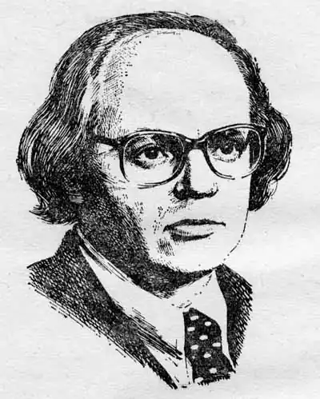

ІВАН ДРАЧ
(Нар. 1936 p., помер 2018)
П'ять літ минало майбутньому поетові в перший рік Великої Вітчизняної війни, а з Перемоги радів на дев'ятому — народився Іван Федорович 17 жовтня 1936p. в с. Теліжинці на Київщині. Після війни біографія І. Драча складалася в прискореному темпі: за десятиліття — до військової служби (1955 — 1958) — він здобув середню освіту, викладав російську мову та літературу в сільській семирічці, був на комсомольській роботі — інструктором райкому комсомолу. Після армії вчився в Київському університеті (завершував навчання заочно, бувши співробітником "Літературної газети"), закінчив Вищі кіносценарні курси в Москві (1964), працював у сценарному відділі Київської кіностудії ім. О. П. Довженка, редакції журналу "Вітчизна", в Спілці письменників України. Чимало списів ламалося навколо поеми "Ніж у сонці" (1961), якою молодий поет дебютував в "Літературній газеті" ще до виходу першої збірки — "Соняшник". Нечасто перші книжки молодих літераторів стають таким помітним явищем, як "Соняшник". Ця збірочка, що містила сорок умовних балад, етюдів та інших віршованих або й не зовсім віршованих творів з примхливими образними асоціаціями, малозрозумілими для багатьох тодішніх читачів, і через двадцять років згадувалась як далеко не традиційна, задерикувата, гостросучасна. Драча в усіх його книжках не сплутаєш ні з ким. Але він, разом з тим, ніби кожного разу починається заново, ніби йде за власним закликом, проголошеним у другій збірці — "Протуберанці серця" (1965): "Народжуйте себе". Поет "народжує себе" і в "Баладах буднів" (1967), і в збірці "До джерел" (1972) (хоч це в значній мірі підсумкова книга, вибране з попередніх видань), і в інших. 1972p. вийшла збірка І. Драча "До джерел". До вибраних творів він додав чимало нового, завершив її перекладами з поетів республіканських радянських літератур та літератур зарубіжних. Тут з'явився вірш "Зелена брама", який через десятиліття дасть назву книзі, що буде відзначена Державною премією СРСР. Та й збірка "Корінь і крона", яка вийшла у 1974 році, почалася вже тут, у роздумах над підсумком першого десятиліття в поезії. Ця книга, складена з двох розділів — "Подих доби" та "Подорожник", вивірила поета на життєспроможність і в координатах сучасності, і в координатах історії. За неї в 1976p. І. Драч удостоєний Державної премії УРСР ім. Т. Г. Шевченка. У поета є наскрізна внутрішня тема, яка пронизує і з'єднує все творене ним, — оте горіння, палання в спразі людяності і краси, і змоги, що про нього вже сказано ще в першій серйозній роботі про творчість І. Драча — передмові Л. Новиченка до "Соняшника". Звучить ця тема і в гостро драматичній тональності (назвемо, крім поем "Ніж у сонці" та "Смерть Шевченка", драматичні поеми "Дума про Вчителя" й "Зоря і смерть Пабло Неруди"), і в мажорно-вибуховій, як у вірші "Небо моїх надій", що відкриває і першу збірку, і цикл "Дихаю Леніним" у книзі "До джерел", і збірку вибраного "Сонце і слово" (1978) Чергова книжка російською мовою "Зеленые врата" (М., 1980) в 1983р. відзначена Державною премією СРСР. "Зелена брама" у вірші, який дав назву книзі, — це умовний образ входу в життя і виходу, початок і кінець. Значного резонансу набули драматичні поеми І. Драча "Дума про Вчителя", "Соловейко-Сольвейг" і "Зоря і смерть Пабло Неруди", що з'явились спочатку в різних книжках, а потім видані збіркою ("Драматичні поеми", 1982). І. Драч працює в багатьох напрямах. Він видає кіноповісті "Криниця для спраглих" та "Іду до тебе" (1970), можна додати до них і поему для кіно "Київський оберіг" та кіноповість "Київська фантазія на тему дикої троянди-шипшини" (обидва твори — в збірці "Київський оберіг", 1983). Також І. Драч активно виступає в галузі літературно-мистецької критики. Творчість І. Драча набула широкої популярності і в нашій країні, і в зарубіжжі. Його поезії відомі в перекладах на російську (кілька окремих видань), білоруську, азербайджанську, латиську, молдавську, польську, чеську, німецьку та інші мови, і кількість перекладних видань зростає. Іван Драч (нар. 1936) Іван Федорович Драч — український поет, перекладач, кінодраматург, громадсько-політичний діяч. Народився 17 жовтня 1936р. в селі Теліжинці на Київщині. Закінчив середню школу в місті Тетіїв, працював учителем. В 1957 — 1962 роках навчався на філологічному факультеті Київського університету, згодом працював у редакції письменницької газети "Літературна Україна". Перша збірка поезій "Соняшник" побачила світ 1962p. Згодом з'явилися й інші поетичні книги: "Протуберанці серця" (1965), "Балади буднів" (1967), "До джерел" (1972), "Корінь і крона" (1974), "Київське небо" (1976), "Сонячний фенікс" (1978), "Американський зошит" (1980), "Шабля і хустина" (1981), "Теліжинці" (1985), "Храм сонця" (1988). Художнє слово І. Драча виклично метафоричне, в своєму потужному семантичному полі воно єднає найглибші шари етногенетичної пам'яті народу з трагічними, часом дисонансними ритмами сучасності. Піднесений космізм і суто побутова "заземленість", художня умовність і різка окресленість реалістичної деталі — такі антиномії іманентно притаманні художньому мисленню поета. Визначним явищем національної літератури стали також поеми "Ніж у сонці" (1961), "Смерть Шевченка" (1962), "Чорнобильська мадонна" (1988). В останні роки І. Драч веде активну громадсько-політичну діяльність. Він був організатором і першим головою Народного Руху України. Нині поет — голова Української Всесвітньої Координаційної Ради, Конгресу української інтелігенції. 1976p. Йому було присуджено Державну премію імені Т. Г. Шевченка. Іван Драч помер 19 червня 2018 року після тривалої хвороби.